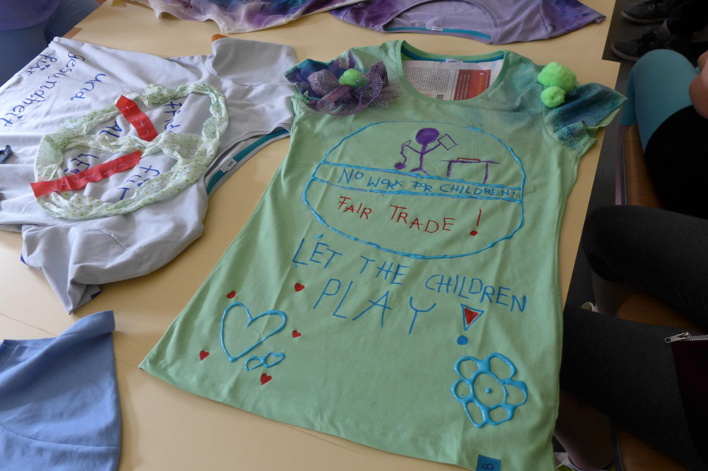
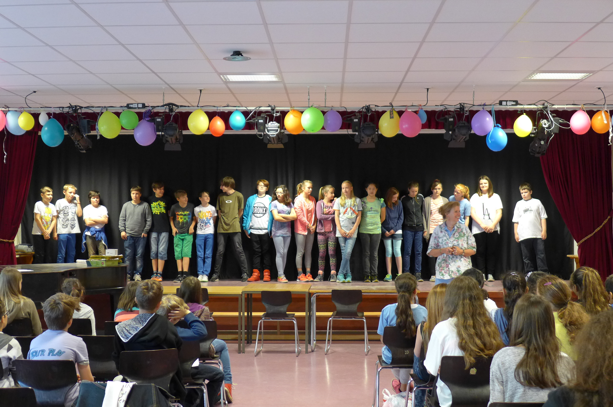
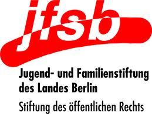
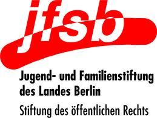

Innerhalb des Workshops warfen die Kinder meist zum ersten Mal einen Blick auf die Etiketten in ihrer Kleidung und erfuhren Näheres über die Herstellungsländer und Materialien, besonders Baumwolle. „Durch die Info-Stationen zu Beginn fühlten sich alle Kinder angesprochen und auch einbezogen“, lobte Frau Conrad von der Kurt Tucholsky Grundschule.

Als Schwerpunkt des Projektes lernten die SchülerInnen in einem Rollenspiel der Textilkette am eigenen Leibe die unfairen Lebens- und Arbeitsbedingungen kennen, denen die meisten ArbeiterInnen ausgesetzt sind, indem sie selbst in deren Rolle schlüpften. Dieser Teil des Projektes erwies sich als unheimlich effektiv – die Kinder verstanden auf Anhieb, wie ungerecht Arbeitsaufwand und Entschädigung auf die Beteiligten der Textilkette verteilt sind. Da die Gruppen anschließend ihren Charakter sowie dessen Lebenswelt und Probleme vorstellten, lernte die Klasse alle beteiligten ArbeiterInnen von Baumwollanbau bis zum Verkauf kennen.
Weiterhin lernten die SchülerInnen Näheres über das „Fair Trade“-Konzept und die positiven Auswirkungen von biologischem Baumwoll-Anbau und werteten gemeinsam einige Zertifikate, welche für faire Arbeitsbedingungen, Bio-Anbau oder ähnliches stehen sollen, auf deren Vertrauenswürdigkeit aus. Zudem wurden Tipps für einen bewussteren Textilkonsum im alltäglichen Leben gesammelt.
Die T-Shirt-Gestaltung, das klare
Highlight des Projektes für die Kinder, fand als letzte Aktivität
statt. Alle teilnehmenden Klassen fanden großen Spaß an dieser
Aufgabe und es entstanden vielfältige, aussagekräftige T-Shirts,
welche die MitschülerInnen, Freunde und Familien der Kinder
ebenfalls auf die Thematik aufmerksam machen sollen. Beim
abschließenden
Sommerf est mit
allen teilnehmenden Schulen wurden
die T-Shirts einander
vorgestellt
und die Kinder erhielten die Möglichkeit, noch einmal eigene
Kleidung
zu gestalten oder im Sinne des Upcycling aus alten
Oberteilen
Umhängetaschen zu flechten. Zusätzlich gab es ein üppiges Buffet
sowie ein Quiz zur Thematik des Projektes und die Kinder wurden mit
einer persönlichen Urkunde offiziell als “Fair Champions”
ausgezeichnet.
est mit
allen teilnehmenden Schulen wurden
die T-Shirts einander
vorgestellt
und die Kinder erhielten die Möglichkeit, noch einmal eigene
Kleidung
zu gestalten oder im Sinne des Upcycling aus alten
Oberteilen
Umhängetaschen zu flechten. Zusätzlich gab es ein üppiges Buffet
sowie ein Quiz zur Thematik des Projektes und die Kinder wurden mit
einer persönlichen Urkunde offiziell als “Fair Champions”
ausgezeichnet.
Um eine nachhaltige Wirkung des Projektes zu erzielen, sind die T-Shirts, sowie Fotos und Plakate aus dem Projekt nun in den Schulen ausgestellt. Zwei Klassen gingen darüber hinaus mit den T-Shirts bekleidet in andere Schulklassen und erzählten vom Inhalt des Projektes. Diese projektübergreifenden Aktivitäten wurden durchweg positiv aufgenommen: “An den ausgestellten T-Shirts und der “Fair Champions”-Wand gibt es viel Interesse innerhalb der Schule und viel positives Feedback” (Frau Skutnik, Pettenkofer Grundschule). Auch den Kindern selbst gefiel es, ihr neues Wissen weiterzugeben: Auf die Frage, was ihm/ihr besonders gefallen habe, antwortete ein/e Schüler/in “dass wir das Projekt noch weiteren vier Klassen vorstellen konnten”.
Aus Evaluationsbögen wurde deutlich, dass allen LehrerInnen sowie der klaren Mehrheit der SchülerInnen das Projekt sehr gut gefallen hat – viele Kinder gaben an, es hätte länger als zwei Tage dauern sollen, oder fragten, ob ein weiteres Projekt stattfinden könne. Auch die beiden Referentinnen waren rundum zufrieden mit Organisation und Umsetzung sowie vor allem mit der erreichten Wirkung. Dieses positive Feedback, die tolle Zusammenarbeit mit den Referentinnen und LehrerInnen, sowie die deutlichen Veränderungen, die in der Einstellung der Kinder wahrzunehmen waren, sind die Gründe dafür, dass wir mehr als zufrieden mit dem “Fair Champions”-Projekt sind!

Gefördert durch:
ENGAGEMENT GLOBAL im Auftrag des  

24. Februar 2021
Virtueller Malarathon – Benefiz-Lauf gegen Malaria in Kamerun

24. Februar 2021
Living with the tiger
16. Dezember 2020
Hoffnung in Zeiten von Corona
15. Dezember 2020
RIBS: Ein Blick Zurück und nach Vorne
15. Dezember 2020
Filter und Netze gegen Malaria
1 | 2 | 3 | 4 | 5 | 6 | 7 | 8 | 9 | 10 | 11 | 12 | 13 | 14 | 15 | 16 | 17 | 18 | 19 | 20 | ª